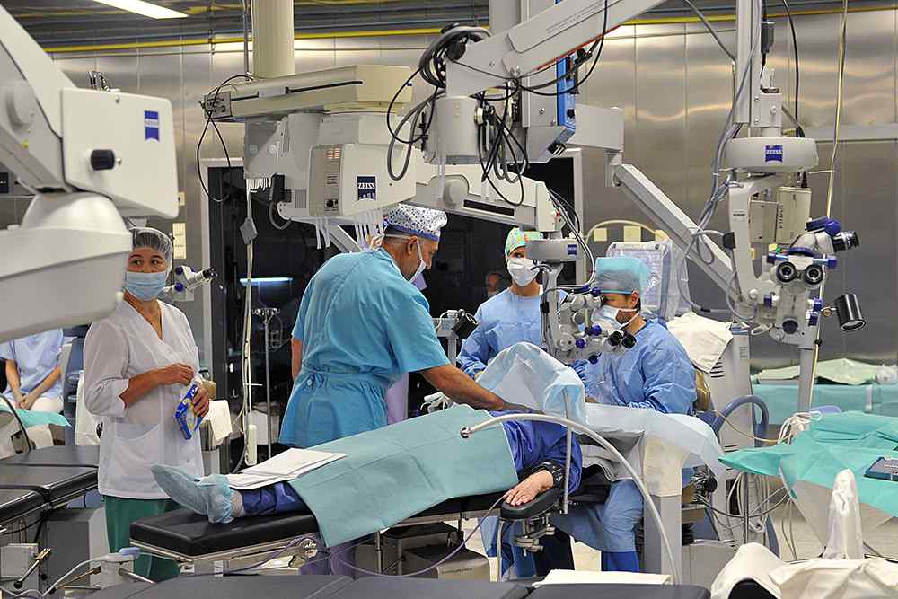

Медицина и Здоровье
Медицина в РоссииЗдравоохранение и медицина в России имеет свою непростую историю. На протяжении последнего столетия оно трижды реформировалось, причем реформы каждый раз были кардинальными. На данный момент в стране действует система обязательного медицинского страхования, которая дополняется добровольным медицинским страхованием и сетью частных медицинских клиник и кабинетов. Медицина в России, а раньше в Союзе долгое время считалась одной из самых сильной в Мире.
 Бесплатная медицинская помощь
Каждый житель Российской Федерации независимо от места жительства имеет право на бесплатную медицинскую помощь. Для этого он должен иметь регистрацию и полис медицинского страхования по месту жительства (Медицинский полис). Этот полис лучше брать с собой в поездки, потому что это документ, который дает право на бесплатную медицинскую помощь в любой точке России.
Амбулаторная помощь
Каждый житель России, в зависимости от места регистрации, приписан к какой-нибудь районной поликлинике. Если место жительства и регистрации не совпадают, гражданин имеет право оформить полис так, чтобы получать медицинскую помощь недалеко от места жительства. В идеале районная поликлиника укомплектована терапевтами, хирургами и врачами основных специализаций: окулистом, ЛОРом, ортопедом, неврологом, аллергологом и так далее. Но в реальности далеко не каждая поликлиника имеет в штате врачей всех специализаций. Чтобы попасть на прием к врачу надо взять номерок на определенное число и время. На приеме врач выслушает жалобы и поставит диагноз сразу или направит на анализы и обследования. Все эти манипуляции тоже по номеркам, то есть долго и неудобно. Но зато бесплатно. Если заболевание потребует госпитализации для обследования или лечения, врач направляет пациента в стационар.
Стационарная помощь
Каждый район прикреплен к своей больнице, то есть участковый врач направит в совершенно определенный стационар – районный. Районный стационар так же укомплектован разным количеством медперсонала и оборудования, в зависимости от бюджета. Например, районная больница в городе (районном центре) будет отличаться от маленькой сельской больнички. Причем городская районная больница города-курорта Анапы может быть оборудована лучше, чем городская районная больница в средней полосе России или в Сибири. В больнице каждому положена медицинская помощь и питание. Если лечащий врач на отделении сочтет нужным, он переведет больного в клинику более высокого статуса, например, областную.
В областной больнице, как правило, есть возможности сделать сложные операции, провести серьезные обследования. Но, если заболевание редкое или требуется серьезная помощь, можно получить направление в столичную клинику в Москве или в Санкт Петербурге. В этих и некоторых других крупных городах есть отделения, на которых разрабатываются новые методы лечения, новые операции. Например, операции на сердце, трансплантация органов, нейрохирургические операции и пр. Такие сложные и дорогостоящие операции выполняются по государственной квоте (Квота на лечение). То есть государство оплачивает определенное количество таких вмешательств в год. Если нужна такая операция, необходимо получить государственную квоту или оплатить саму операцию.
Особые медицинские учреждения
В России есть несколько направлений медицины, которые выделены особо. Эти отделения не располагаются в одном здании с другими, их стационары так же бывают отдельно.
1.Фтизиатрическая служба (туберкулез);
2.Психиатрическая служба;
3.Дерматоневрологическая служба;
4.Наркологическая служба.
Все больные этих профилей обслуживаются в своих диспансерах и не пересекаются с обычными потоками больных.
Акушерско-гинекологическая помощь оказывается женщинам в женских консультациях, на гинекологических отделениях и в родильных домах. Все специализированные медицинские учреждения обслуживают жителей прикрепленного к ним района. Но есть и специализированные родильные дома. Например, роддом для женщин с заболеваниями сердца или для женщин с резус-конфликтом. В такой роддом направит участковый врач акушер-гинеколог, если будут обнаружены показания к этому.
В крупных городах и больших районах детская поликлиника вынесена в отдельное здание, отдельно выстроены детские больницы. В них работают врачи, окончившие педиатрических институт – педиатры. Но иногда детские отделения соседствуют со взрослыми, но все равно, там работают педиатры. Организмы ребенка и взрослого очень отличаются, поэтому взрослый врач не сможет адекватно диагностировать и лечить ребенка.
Восстановительное лечение
Если после перенесенного заболевания необходимо восстановление, пациент направляется в санаторий. Там продолжается лечение и восстановление организма. При некоторых заболеваниях санаторно-курортное лечение положено ежегодно, это определяет лечащий врач и комиссия МСЭ . Например, детей, которые болеют астмой и имеют инвалидность, стараются направлять в санаторий каждый год.
Частные центры
В последние годы все больше появляется частных медицинских центров. Обслуживание и обстановка такого центра превосходны. Здесь принимают врачи – дипломированные специалисты, но часто качество помощи совершенно не соответствует заявленному уровню. Любая услуга в таком центре платная и поэтому очень часты случаи назначения ненужных процедур. Возможно, спустя несколько лет эта проблема решится. Первые частные кабинеты были стоматологическими, они уже прошли этот этап и теперь оказывают вполне квалифицированную помощь.
Страховые компании
Страховая компания выплачивает деньги медицинскому учреждению за оказанную медицинскую помощь. Причем они жестко контролируют врачей, часто усложняют работу и ограничивают размер этой помощи. Например, госпитализация по какому-то заболеванию не должна превышать определенного количества дней. Если возникло осложнение и требуется продолжение лечения, возникают неразрешимые проблемы со страховой компанией.